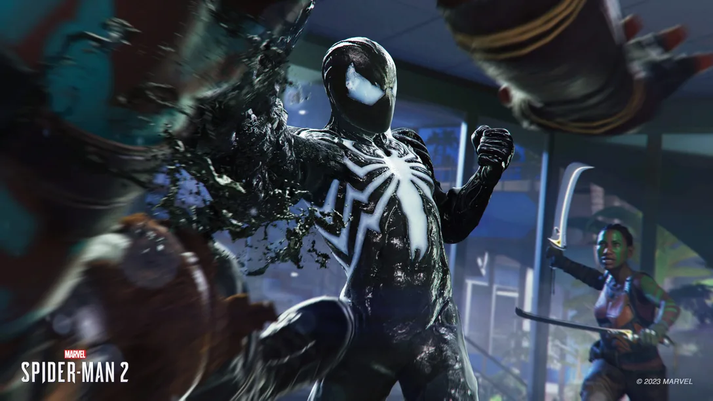

Video Games
Video games have been a core part of my life since I was 5 years old. I can still remember playing on my first Playstation system and thinking how amazing it was back in 2000. Today it's almost wild to see how far video games have come in terms of scale, budget, graphics, and replayability. My favorite video game brand would be PlayStation. Currently I'm playing on the PS5 and enjoying the new Spider-Man 2 game. I love to play open world type games were you can explore at your own pace. It's easy to find yourself getting lost in world if that game is good enough.
